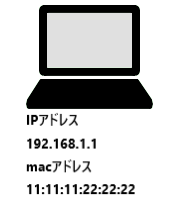
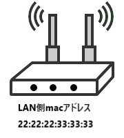
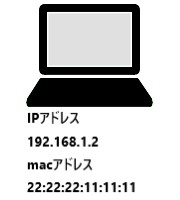

2台のPCから通信する際のパケットの変化をアニメーションで確認

PC 1

Wi-Fiルータ
ONU
Webサーバ
パケット
パケット

PC 2
NAPT テーブル
| プライベートIP:ポート | グローバルIP:ポート |
|---|---|
| 192.168.1.1:50000 | 1.2.3.4:51000 |
| 192.168.1.2:50000 | 1.2.3.4:52000 |